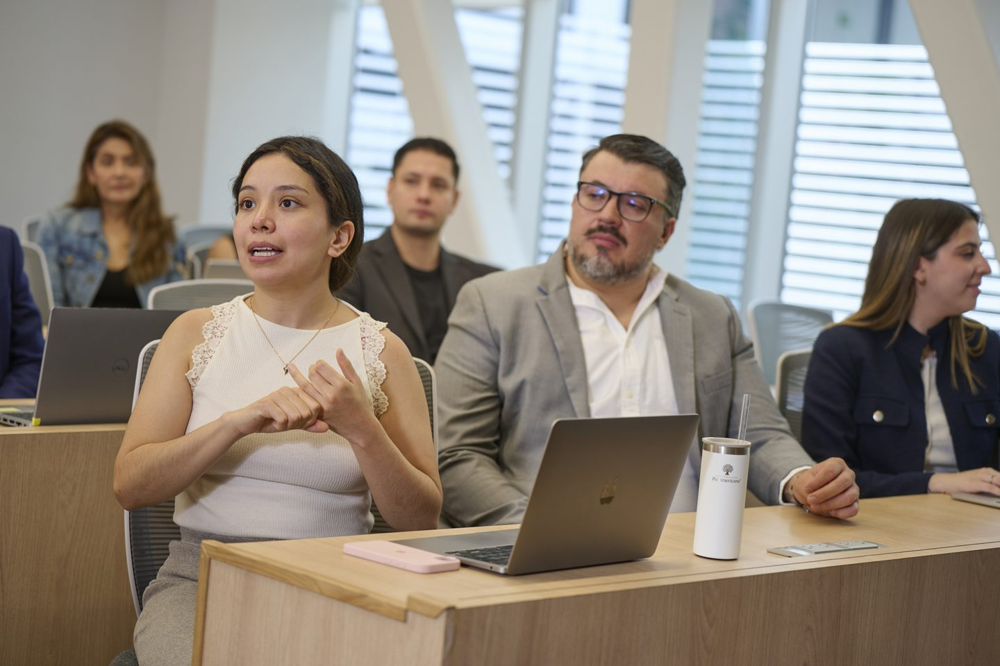
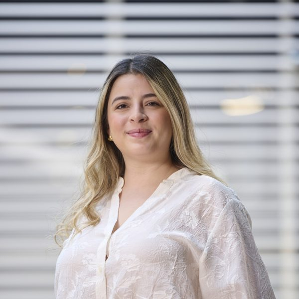
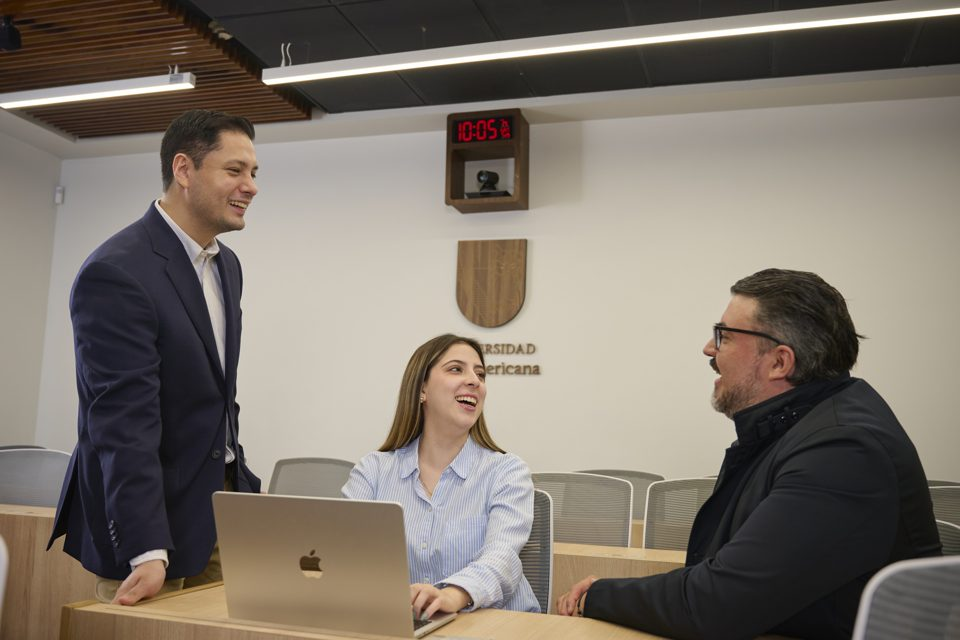

Título de noticia de longitud realista, hasta noventa caracteres, sobre la vida académica
Resumen de hasta ciento sesenta caracteres que anticipa el contenido sin repetir el título. PLACEHOLDER
Posgrados Panamericana
Colores, tipografía, espaciado y componentes del nuevo sitio de Posgrados, con textos y programas reales. Los bloques marcados como PLACEHOLDER tienen la extensión que tendrá el contenido final, pero no son contenido del cliente.
Estrategia Comprometida: el verde 329 CP es la identidad; los neutros se matizan hacia él; el dorado es línea, icono o texto sobre tinta. Todos los valores de marca son del manual; los neutros de interfaz son decisión B&O.
--superficie-base · #F7F5F0--superficie-elevada · #FFFFFF--superficie-marca · #00685E--superficie-marca-atenuada · #408E86--superficie-marca-tinte · #E3EEEB--superficie-profunda · #14211F--contenido-primario · #14211F--contenido-secundario · #3A4A47--contenido-terciario · #5C6B68--contenido-error · #A83A2D--acento-ceremonial · #B9975B--acento-ceremonial-metalico · #AB8855--borde-suave · #C9D6D3Panamericana (serif propia) en títulos y cifras; Seravek (sans humanista) en cuerpo e interfaz. Georgia y Verdana solo como respaldo. Escala fluida entre 360 y 1280 px.
--texto-display · Panamericana 600 · 40→64 px · 1.05
Conoce la oferta de Posgrados que la Universidad Panamericana te ofrece en sus diferentes Campus.
--texto-h1 · Panamericana 600 · 30→44 px · 1.1 · caso más largo del inventario (80 caracteres)
Especialización en Derecho de las Tecnologías de la Información y Comunicación
--texto-h2 · Panamericana 400 · 24→32 px · 1.15
¿Cuál es su valor agregado?
--texto-contador · Panamericana 400 · 32→40 px | --texto-cifra · 22→26 px
150 programas 18 meses · Marzo 2026 · Presencial
--texto-h3 · Seravek 700 · 18→20 px · 1.3
Maestría en Propiedad Industrial, Derechos de Autor y Nuevas Tecnologías
--texto-cuerpo-grande · Seravek 400 · 18→19 px · 1.55 · medida 36 rem
La Maestría en Comunicación Institucional forma profesionales con competencias avanzadas en las áreas comunicación interna, cambio organizacional, manejo de crisis, comunicación digital, gestión de comunicación y construcción de relaciones.
--texto-cuerpo · Seravek 400 · 16 px · 1.6
Anclado a una metodología comprobable, la Maestría en Comunicación Institucional brinda el conocimiento y experiencia de docentes con amplia experiencia internacional que hacen de ésta, una Maestría fundamentada en el trabajo diario con una solidez teórica. Solicita una cita para atención personalizada.
--texto-etiqueta · Seravek 500 · 14 px | --texto-pequeno · Seravek 400 · 14 px · 1.5
Modalidad · Duración · Sede
RVOE SEP 20200723 de fecha 15/10/2020, Plan 2020, modalidad escolarizada, Augusto Rodin 498, Col. Insurgentes Mixcoac, Benito Juárez, CP 03920, Ciudad de México, México.
| Paso | Familia · peso | 360 → 1280 | Interlineado | Uso |
|---|---|---|---|---|
--texto-display | Panamericana 600 | 40 → 64 | 1.05 | Hero, portada de sede |
--texto-h1 | Panamericana 600 | 30 → 44 | 1.10 | Título de página, nombre de programa |
--texto-h2 | Panamericana 400 | 24 → 32 | 1.15 | Secciones |
--texto-contador | Panamericana 400 | 32 → 40 | 1.00 | Contador de resultados |
--texto-cifra | Panamericana 400 | 22 → 26 | 1.20 | Valor de dato clave |
--texto-h3 | Seravek 700 | 18 → 20 | 1.30 | Nombre en listado, subtítulos |
--texto-cuerpo-grande | Seravek 400 | 18 → 19 | 1.55 | Intro de ficha |
--texto-cuerpo | Seravek 400 | 16 | 1.60 | Texto corrido, campos, nav |
--texto-etiqueta | Seravek 500 | 14 | 1.40 | Etiquetas, chips (nunca versalitas) |
--texto-pequeno | Seravek 400 | 14 | 1.50 | RVOE, legales, metadatos |
--texto-boton | Seravek 500 | 16 | 1.00 | Botones |
Base 8 px. Tres valores de sección que se alternan según el registro: compacta (Product), sección (mixto), amplia (Brand). Un solo valor uniforme está prohibido.
--espacio-hilo · 4--espacio-compacto · 8--espacio-base · 16--espacio-bloque · 24--espacio-grupo · 32--espacio-modulo · 48--espacio-seccion-compacta · 64--espacio-seccion · 96--espacio-seccion-amplia · 12812 columnas a ≥ 900 px, 6 entre 600 y 899, flujo por debajo. Canal 24 px. Máximo 1200 px, anclado a la izquierda. Breakpoints provisionales: 600 · 900 · 1200, por dónde se rompe el contenido.
Franco cuartel en ficha: bloque de marca 5/12, contenido 7/12. Columna de lectura: 36 rem. Formulario: 32 rem.
Voz de marca: tela, roble, filete. Materiales con canto. Radio máximo 2 px; la pastilla solo en chips. Sombra únicamente en lo que flota.
Tres duraciones: 120 ms (hover, foco), 200 ms (menús, chips, mensajes), 400 ms (el contador). Dos curvas. Solo opacity, transform y colores. Con prefers-reduced-motion todo pasa a 1 ms y el contador se anuncia por región viva.
El único momento con movimiento intencional del sitio es el contador de la Oferta: ver Filtros, contador, tarjeta.
El bloque de marca aloja título, contexto y CTA sobre verde sólido; el tahalí (60°, una vez por página) cruza el borde entre bloque y foto o papel. Texto nunca sobre la foto.
Titular de campaña PLACEHOLDER · foto del banco (Mixcoac) · un CTA · estático
Posgrados Panamericana
Maestrías, especialidades y doctorados en tres campus, con horarios pensados para quien trabaja.

Contenido real de la ficha actual de Maestría en Comunicación Institucional (CDMX)

Guadalajara, Aguascalientes y Santa Fe mientras no exista material. El tahalí va sólido con contorno dorado; nada de banco.
Sede
31 programas de posgrado en Ingeniería, Empresariales, Pedagogía, Derecho y Agroalimentos.
Cinco elementos en primaria + CTA; secundaria en barra utilitaria a ≥ 900 px; menú en móvil. El enlace actual lleva atributo, línea y peso.
El logotipo es el WebP de 137 × 160 px disponible; se sustituye por el vector cuando llegue (B10).
Un primario por viewport. El hover del primario no cambia el fondo (el manual no permite variar el 329): añade un filete dorado exterior.
Pasa el cursor y tabula para ver hover y foco. Enlace en texto: color marca y subrayado; en hover, tinta y subrayado de 2 px.
Filtro (interactivo; el estado activo lleva fondo, texto inverso y ✓) y etiqueta de nivel (estática). La única forma redonda del sitio.
Un solo esquema de campos en todo el sitio. Etiqueta visible siempre; obligatorio en texto; error junto al campo con icono y texto. Campus y programa prellenados en la variante ficha.
Texto, no solo color. El dorado aparece como borde en advertencia, nunca como texto.
Recibimos tu solicitudUn asesor de Comunicación en CDMX te contacta en menos de 24 horas hábiles. PLACEHOLDER
Error: no pudimos enviar tu solicitudTus datos siguen aquí.
Próxima aperturaLa fecha de inicio publicada ya pasó. Consulta con tu asesor la siguiente generación.
Este programa también se imparte en Guadalajara con horario de fin de semana.
Prueba quitando un filtro, o revisa la oferta de Filosofía en CDMX.
Demo funcional con 18 programas del inventario oficial. El contador es la región viva y el único movimiento intencional del sitio. La tarjeta es tipográfica: los programas no tienen foto.
18programasen la muestra
Prueba quitando un filtro.
Los cinco datos en la misma posición en las 150 fichas. Un dato ausente se muestra, no se oculta. El asesor es una persona real cuando exista consentimiento; aquí, placeholder.

Asesora de admisión · Comunicación · CDMX
asesor@up.edu.mx · Cel. 55 0000 0000
RVOE SEP 20200723 de fecha 15/10/2020, Plan 2020, modalidad escolarizada, Augusto Rodin 498, Col. Insurgentes Mixcoac, Benito Juárez, CP 03920, Ciudad de México, México.
Cuatro sedes en tres campus. Solo Mixcoac tiene fotografía; las demás usan la variante sin fotografía hasta que exista material (nunca banco).
Narrativa PLACEHOLDER de longitud realista (≈ 430 caracteres, como la referencia ESIC)
Texto narrativo sobre la sede: por qué estudiar aquí, qué tiene la ciudad y el campus, cómo se vive el posgrado entre semana por la noche y los sábados. Este párrafo tiene la extensión que tendrá el contenido real, alrededor de cuatrocientos treinta caracteres, para que el bloque se diseñe con la medida correcta y no con una frase corta que después no cabe.



Texto narrativo sobre la sede con la misma extensión que el anterior, para que la página de Sedes no cojee entre ciudades con foto y ciudades sin foto. Cuando lleguen las seis fotografías propias de Guadalajara, la plantilla cambia sola a la variante con mosaico; el editor no elige la variante. PLACEHOLDER
Se lanzan solo si hay contenido real para tres meses (B24). Aquí todo es placeholder.
Resumen de hasta ciento sesenta caracteres que anticipa el contenido sin repetir el título. PLACEHOLDER
19:00 · En línea · Empresariales PLACEHOLDER
10:00 · Presencial Realizado
El proceso de admisión es la única secuencia numerada del sitio. El acordeón solo contiene contenido opcional, nunca datos clave ni RVOE.
Completa el formulario y un asesor te contacta para resolver dudas y revisar tu perfil. PLACEHOLDER
Texto de longitud realista sobre qué documentos se piden y en qué formato.
Texto de longitud realista sobre la entrevista y la carta de aceptación.
Contenido opcional y largo: materias por semestre, créditos, seminarios. PLACEHOLDER
Tipos de beca, requisitos y convenios (B25).
Los únicos elementos con sombra: flotan sobre la página. Dos opciones de igual peso en cookies.
Superficie profunda; el único lugar donde el dorado es texto (6.03:1). Contenido real del pie actual.